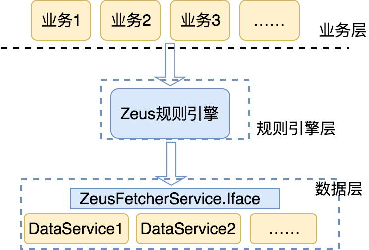

说明：如何开发rpc接口可被Zeus调用
一、背景
Zeus支持在运行时获取业务接口数据，即业务通过通用接口与zeus交互，zeus在运行时根据规则的依赖，调用通用接口获取数据，本文档主要介绍业务侧RD如何开发对接Zeus的接口。
二、名词解释
无
三、操作说明
1.系统对接架构

在对接前先了解一下整个对接的系统架构，各模块解释：
- 业务层：与zeus对接的各个业务应用，在调用zeus规则引擎时传入场景id + 基本上下文参数，并处理zeus返回的决策
- 引擎层：使用业务传入的上下文，运行业务指定场景配置的规则，并在运行时按需调用数据层获取业务数据
-
数据层：
- ZeusFetcherService.Iface：业务层接口（octo或pigeon），作为规则引擎与数据服务通信的统一接口（接口详情见下文）
- DataService：业务的数据服务，通过ZeusFetcherService与规则引擎通信，实现获取各种数据的功能
2.对接步骤
业务层请移步对接文档：说明：Zeus在线服务OCTO接入文档
下面会以getCityByIp为例子辅助说明各个步骤
2.1 OCTO鉴权配置
业务方需要增加com.sankuai.rc.zeus鉴权
这里，使用近线引擎的业务方需要添加如下鉴权:
线上实际调用com.sankuai.zeus.nearline,
画布测试及仿真测试 com.sankuai.zeus.nearline.rpc
2.2 POM与OCTO
pom依赖
注意：zeus-thrift0.9.2 jar包请使用最新版本，老版本可能存在鉴权问题。链接：zeus-thrift0.9.2版本列表
<dependency>
<groupId>com.meituan.rc.zeus</groupId>
<!--如果使用0.9.2版本thrift，artifactId设置为zeus-thrift0.9.2-->
<artifactId>zeus-thrift</artifactId>
<version>1.1-SNAPSHOT</version>
</dependency>octo配置，和octo基本用法相同
octo的publisher配置如下，需要注意的是如果返回字段值需要返回null要将serializeNullStringAsBlank设为true
<bean id="zeusFetcherServicePublisher" class="com.meituan.service.mobile.mtthrift.proxy.ThriftServerPublisher"
init-method="publish" destroy-method="destroy">
<property name="serviceInterface" value="com.meituan.rc.zeus.thrift.fetcher.ZeusFetcherService"/> <!-- 接口类 -->
<property name="serviceImpl" ref="zeusFetcherServiceImpl"/> <!-- 实现类 -->
<property name="appKey" value="com.sankuai.rc.tatooine.fetcher"/> <!-- 本地 appkey -->
<property name="port" value="9222"/> <!-- Server 监听端口 -->
<property name="serializeNullStringAsBlank" value="true"/> <!-- 建议设置为true -->
</bean>2.3 数据服务实现
上述zeus-thrift中对应的idl文件如下，通过提供该接口与zeus进行数据通信，上海侧Pigeon对接移步：上海侧Pigeon数据对接注意事项 无需自己生成 使用zeus-thrift包内即可
struct FetchRequest {
1: string requestId
2: string methodName //当前请求的Fetcher
3: map<string, string> context //thrift不支持object, zeus的基本类型都是可以和string互相转换的，所以可以直接用string来传输上下文
4: set<string> targetKeys
}
struct FetchResult {
1: map<string, string> resultMap
2: string errMsg
}
service ZeusFetcherService {
bool isAlive()
FetchResult query(FetchRequest request)
}数据结构说明
FetchRequest：获取数据请求
- requestId：请求id，建议在日志中记录，可在zeus日志查询中使用
- methodName：获取数据的方法名
- context：请求上下文，用于传递方法的参数，值类型是string，是因为string可与zeus上的任意类型转换
- targetKeys：当前请求获取的字段，支持一个方法按需批量返回指定的字段
FetchResult：获取数据的结果
- resultMap：使用key-value的形式将数据返回，其中key与targetKeys对应，resultMap中的value如果希望是null，需要在octo的publisher中将serializeNullStringAsBlank设为true
- errMsg：可选，业务可以返回错误信息
接口说明
isAlive : 方便zeus检测服务是否在线，返回true即可
query：
- 输入：FetchRequest
- 返回：FetchResult
2.4 例子
伪代码实现ZeusFetcherService，其中包含getCityByIp和getUserInfoByUserId两个method
伪代码示例如下：
public class ZeusFetcherServiceImpl implements ZeusFetcherService.Iface {
public static final Logger LOGGER = LoggerFactory.getLogger(ZeusFetcherServiceImpl.class);
@Override
public boolean isAlive() throws TException {
//主要用于检测是否在线
return true;
}
@Override
public FetchResult query(FetchRequest request) throws TException {
if (!this.isValidMethod(request.getMethodName())) {
FetchResult result = new FetchResult(Maps.<String, String>newHashMap());
// 可选：错误信息，在测试时出现问题可在后台页面观察到
result.setErrMsg("method not found");
return result;
}
//当前要获取的字段
Set<String> targetKeys = request.getTargetKeys();
//请求上下文
Map<String, String> context = request.getContext();
//methodName对应在zeus后台注册的数据接口
String methodName = request.getMethodName();
Map<String, String> resultMap = Maps.newHashMap();
if (methodName.equals("getCityByIp")) {
resultMap = getCityByIp(targetKeys, context);
} else if (methodName.equals("getUserInfoByUserId")) {
resultMap = getUserInfoByUserId(context);
} else if (other method ...) {
resultMap = ....
}
// 建议记录requestId和methodName，可与zeus日志查询关联
LOGGER.info("success requestId:{}, method:{}", request.getRequestId(), request.getMethodName());
return new FetchResult(resultMap);
}
private Map<String, String> getCityByIp(Set<String> targetKeys, Map<String, String> context) {
Map<String, String> resultMap = Maps.newHashMap();
String ip = MapUtils.getString(context, "ip");
// 可根据targetKeys按需获取相应的数据
if (targetKeys.contains("cityName")) {
resultMap.put("cityName", getCityNameByIp(ip));
}
if (targetKeys.equals("cityId")) {
resultMap.put("cityId", getCityIdByIp(ip));
}
return resultMap;
}
private Map<String, String> getUserInfoByUserId(Map<String, String> context) {
Map<String, String> resultMap = Maps.newHashMap();
String userid = MapUtils.getString(context, "userid");
resultMap.put("userName", getUserNameByUserId(userId));
resultMap.put("email", getEmailByUserId(userId));
return resultMap;
}
}注意事项
实现服务的输入上下文是map<string, string>，返回结果也是map<string, string>类型，因此数据服务的实现方需要自行考虑将输入的string转换成自己所需的类型，然后统一返回string类型给Zeus，Zeus会根据配置界面上返回字段映射的参数的类型自动进行强制类型转换
3.风控系统兼容
新对接系统无需关心
北京上海风控系统历史实现方式不同，请移步：
四、FAQ
--待补充--